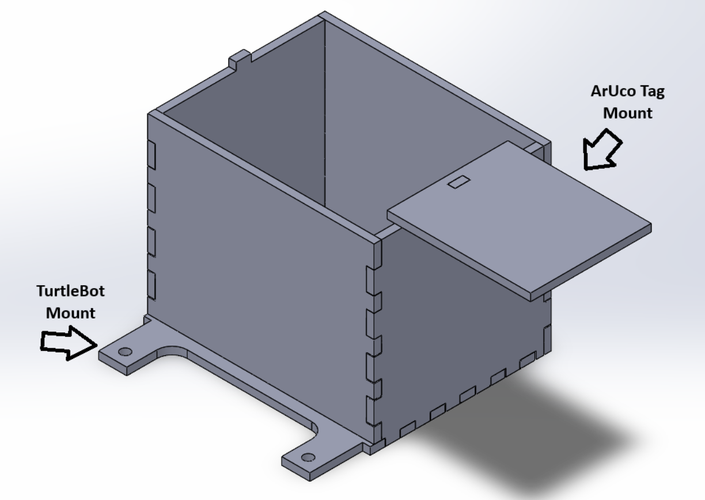
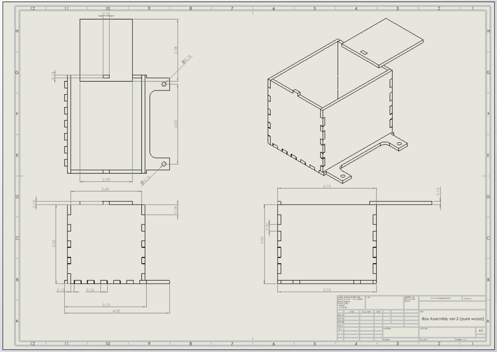

Design
Hardware Design
The basin was created with ease of assembly and mounting as its highest priority using an 1/8 inch piece of plywood and a laser cutter. To manage this, it was decided to create the wooden box without using any fasteners. This was achieved by using a tolerance F8/h6 hole to shaft combination nominal to a 3mm to 6mm diameter to create a transition fit. This made the box snap rigidly, saving the use of tools for assembly. The base was then modified to attach itself to the turtlebot using two 4mm screws and nuts which were then screwed by hand. The box was light enough that it didn’t impact the center of gravity of the turtlebot, despite the ArUco tag attachment hanging from the box’s side.
Hardware Photos


Illustration of the workflow

Turtlebot3 Workflow